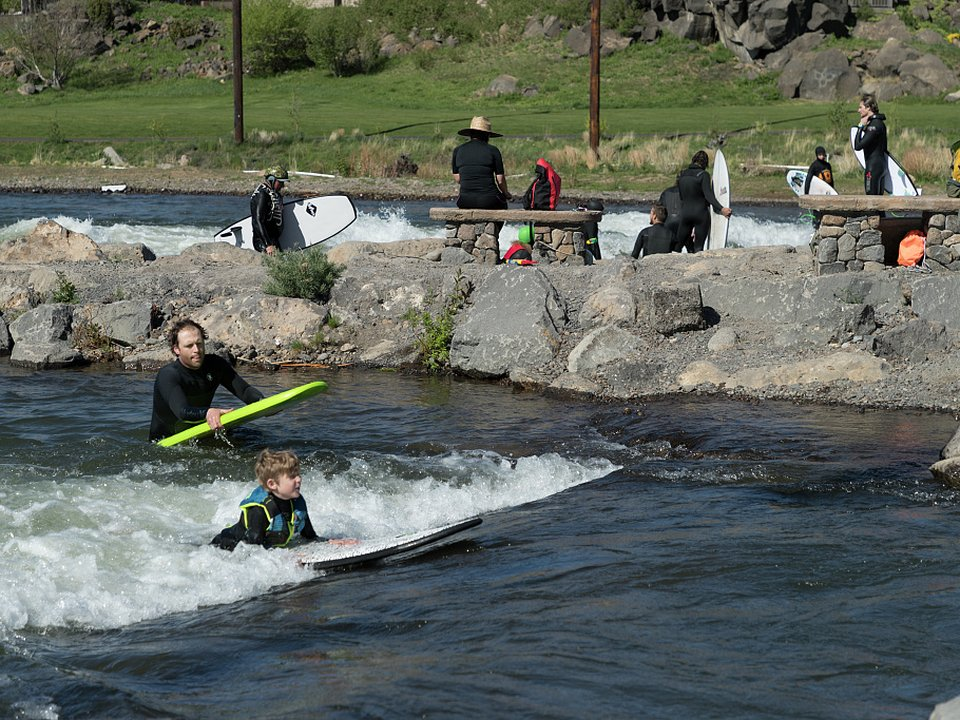

Sunriver · Resort
Sunriver Resort
A large resort with golf, pools, a spa and bike paths.
Official details for Sunriver ResortFly in to a resort with its own runway.
Sunriver is a resort community in the pines south of Bend with its own 5,460-foot runway, so you can taxi to your weekend. Stay at Sunriver Resort, bike miles of paths, float the Deschutes River, see the High Desert Museum and the lava fields, ski or hike Mount Bachelor, and spend an evening in Bend’s brewery-filled downtown.

Time illustration: direct distance at 150 KTAS plus 15 minutes for departure and arrival, matching the discovery page. Use ForeFlight for your actual flight plan.
S21, Sunriver, is a non-towered, public-use airport owned by Sunriver Resort at 4,164 feet with a 5,460-foot runway, minutes from the resort. Bend Municipal (KBDN) and Redmond (KRDM) are nearby alternatives.
Sunriver Airport, Sunriver, OR
High elevation: compute performance, especially on summer afternoons. Noise abatement: climb west of the airport before turning on course. Waterfowl near the field. (FAA chart supplement remarks.) No live fuel price is shown.
Southern Cascades flying: high terrain and mountain wave around Shasta and the Cascades, summer thunderstorms and wildfire smoke, winter icing and snow, and high density altitude at the higher fields. About 2060 nm from Myrtle Beach: two long days each way with several fuel stops. Plan a week, or overnight on the way out and back.
Rates and availability need travel dates. Summer and ski weeks book early.
A large resort with golf, pools, a spa and bike paths.
Official details for Sunriver ResortA luxury ranch resort east of Bend.
Official details for Brasada RanchReserve weekend dinners.
A Bend classic beside Mirror Pond.
Official details for Pine TavernBend’s pioneering brewery and public house.
Official details for Deschutes BreweryA Mediterranean restaurant in Bend.
Official details for Olive & MaySummer is dry and sunny; winter is ski season.
This prototype links to the local visitor site. It does not yet match events to your travel dates.
Floating, biking and hiking.
Visit Bend for Summer seasonMount Bachelor.
Mt. Bachelor for Ski seasonDozens of breweries around Bend.
Visit Bend for Bend Ale TrailCheck the local calendar when choosing a weekend, and confirm dates and tickets with the organizer.
A sample Central Oregon weekend. This is a two-day flight each way; plan a week. No bookings or availability confirmed.
Land at S21 mid-morning.
Lunch at the resort and a bike ride.
The High Desert Museum, then back to the airport.
Land at S21, subject to weather and your actual flight plan.
Bike the Sunriver paths.
Dinner at Pine Tavern.
The High Desert Museum.
Lava Butte and Newberry.
Deschutes Brewery.
Mount Bachelor.
Return the car and allow time at the airport.
Afternoon thunderstorms and density altitude in summer; leave in the morning.
Lava Butte.
Mount Bachelor.
Dinner at Pine Tavern in Bend.
These details make the difference between an appealing list and a usable getaway.
Resort and any bike or ski rentals.
About 2,060 nm from Myrtle Beach: two long days each way.
Over 4,000 feet; compute performance.
June to September, and ski season.
Picks and links reviewed by WingAway Weekends. Hours, prices, menus and availability change often, so confirm directly with each place before booking. Spotted something out of date, or have a favorite we missed? Email us at hello@wingawayweekends.com.
WingAway Weekends helps you discover the destination. Use ForeFlight and current official aviation information for route, performance, weather, NOTAMs and preflight decisions. Flight planning and PIC responsibility stay with the pilot.
One fly-in weekend, a Fly to Lunch pick and the newest guides, about once a month.
Free. Unsubscribe anytime.